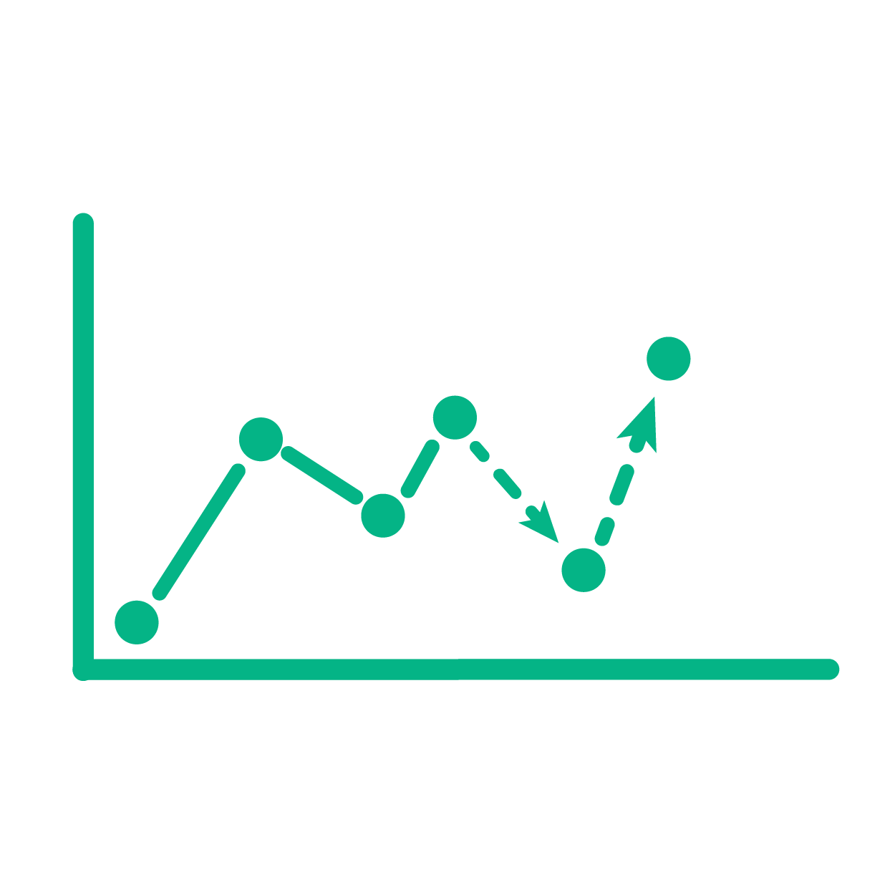

Physical AI · Autonomous Systems · Future Mobility
Proactive AI for Intelligent Traffic Control
ProLight develops next-generation intelligent transportation systems that anticipate disruptions, learn traffic dynamics, and enable proactive traffic control through advanced simulation, graph learning, world models, and autonomous decision-making.
About
Urban traffic networks are complex, uncertain, and vulnerable to disruptions. ProLight investigates how AI systems can predict future traffic states, reason over network-level interactions, and make robust control decisions before congestion propagates.
Traffic Simulation
Using microscopic traffic simulation with advanced driver behavior modeling and uncertainty representation.

World Modeling
Learning future traffic dynamics through graph neural networks and mixture-of-experts architectures.
Multi-Agent Control
Using learning-based control methods for decision making and coordination among intelligent traffic control agents.
Policy Learning
Using model-based policy learning for real-time and large-scale decision making.
Technologies
Core technologies powering ProLight
ProLight integrates simulation, prediction, optimization, and policy learning into a unified framework for proactive traffic management. Together, these technologies enable intelligent transportation systems to anticipate disruptions, evaluate alternative actions, and optimize traffic flow at scale.
A simulation environment for training and evaluating AI-based traffic signal control under incidents, uncertainty, and network-level disruptions. T-REX incorporates advanced driver behavior modeling, contextual lane-changing, speed adaptation, and incident-aware traffic dynamics.
A Graph Neural Network Model Predictive Control framework for proactive traffic signal optimization. GNN-MPC combines network-wide traffic prediction with coordinated planning to improve mobility and resilience under dynamic traffic conditions.
A model-based policy learning framework that combines simulation, planning, and policy iteration to enable real-time decision making for large-scale traffic signal control systems.
Research Network
Collaborating Institutions
ProLight brings together researchers and collaborators from leading institutions in transportation, artificial intelligence, and intelligent systems.
Research Outputs
Publications and Open-Source Projects
Nguyen, D. V. A., Azevedo, C. L., Toledo, T., & Rodrigues, F. (2025).
Robustness of Reinforcement Learning-Based Traffic Signal Control under Incidents:
A Comparative Study.
arXiv preprint arXiv:2506.13836.
View Publication →
T-REX: A benchmark environment for training and evaluating
traffic signal control algorithms under incidents, uncertainty, and
network-level disruptions.
View Repository →
News & Blog
Updates, tutorials, and project notes
Follow tutorials, technical updates, and research notes from the ProLight project.
Getting started with T-REX
Learn how to use T-REX for evaluating traffic signal control algorithms under incidents and network disruptions.
Read more → Research NoteTraffic world models for proactive control
A short explanation of how GNN-MPC learns traffic dynamics and supports model predictive signal control.
Read more →Team